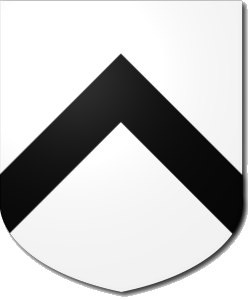
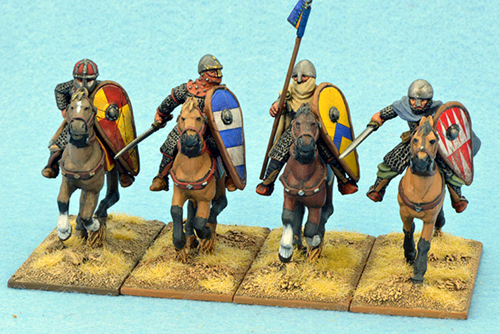
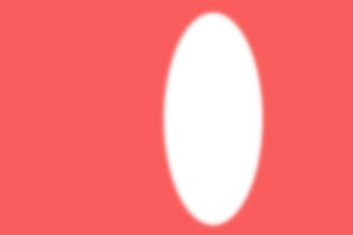

We have added some interest to our shield by splitting the field into two but we can do more by adding an ordinary. You can think of these as "big shapes" that fit across the field (the shield background, remember?). Ordinaries are usually quite large, obvious features that always appear in the same position on the shield. Ordinaries have a colour and, as we saw with divisions earlier, the colour in blazonry almost always comes AFTER the object.
Let's look at one example, the chevron. We already have a clue about what it might look like from the previous page, where we said that per chevron split the shield into two parts by an inverted 'V' shape. Blazonry is consistent, so we can expect the chevron ordinary to be something that is also 'V' shaped, and indeed this is the case. Using some of our newly found colours we can create the image above. Can you work out what its blazon would be?
Recall that the field comes first, in this case, plain white, or argent, then we have a black chevron, so that is a chevron sable, giving us another complete blazon:
Argent, a chevron sable
Note that in this blazon we have a put a in comma in there, which makes it easier to say when read outline, but there is no need to do this. In most cases, as long as the comma is in a sensible place, DrawShield will just ignore it.
We now enough blazonry to start describing shields that we find in the real world. Which of the mounted knights below is holding a shield which could be described by the blazon below?
Or, a chevron azure
|   | |||
Image credit: grippingbeast.co.uk
Good work! When you are ready, move to learning about charges on the next page.